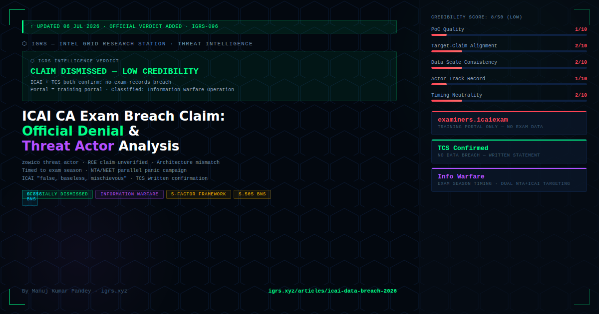

Update (6 July 2026): Since our original report on 16 June 2026, ICAI has issued an official denial and TCS has separately confirmed no breach. This article has been updated with the complete official response, a full threat actor credibility assessment, and an investigator's framework for evaluating similar claims.
On June 16, 2026, a pseudonymous threat actor identified as 'zowico' posted claims on cybercrime forums alleging:
| Claim | Specific Allegation |
|---|---|
| System access | Full Remote Code Execution (RCE) capabilities + super administrator access to examiners.icaiexam.icai.org |
| Data accessed | Answer sheets of CA May 2026 exam candidates |
| Examiner data | Examiner profiles, marking schemes, question-paper data |
| Manipulation capability | Ability to modify marks at both question-wise and overall paper level |
| Scale claim | Multiple conflicting figures — 200K+ exam-system users vs 600K+ member PII (conflicting, not reconciled) |
Red flag noted in original report: The conflicting data scale figures (200K vs 600K) were already a credibility indicator — legitimate threat actors with actual access typically have precise counts. Conflicting figures suggest either guesswork or a different dataset than claimed.
ICAI (Official): "The portal being referred to, namely examiners.icaiexam.icai.org, is a training portal used exclusively for examiner orientation and has nothing to do with exam-related records as claimed in these social media posts."
ICAI (Official): "ICAI assures all stakeholders that there has been no compromise of candidates' examination records, answer books, marks data, or any sensitive information related to the examination process."
ICAI (Legal Warning): "ICAI has viewed the matter seriously and assures that stringent action in accordance with law will be taken against persons spreading such rumours and false claims."
Every unverified breach claim must be evaluated against a structured credibility framework before investigation resources are allocated or public communication issued. Here is the IGRS 5-factor assessment for the zowico/ICAI claim:
| Factor | Assessment | Score | Notes |
|---|---|---|---|
| 1. PoC Quality | No verifiable sample data from the specific claimed system — no answer sheet, no candidate record, no marks database entry produced | 1/10 | Legitimate threat actors with actual RCE access almost always drop a sample to prove access. Absence here is the loudest signal. |
| 2. Target-Claim Alignment | Claimed system (examiners training portal) ≠ claimed impact (answer sheet access, mark modification). Architecture mismatch. | 2/10 | ICAI confirmed: training portal has no connection to exam records database. RCE on a training portal ≠ access to production exam data. |
| 3. Data Scale Consistency | Conflicting figures: 200K+ (exam system users) vs 600K+ (member PII). No explanation of discrepancy. | 2/10 | Legitimate breaches have consistent data counts. Shifting figures suggest guesswork — actor may have had partial access to something, but not what was claimed. |
| 4. Actor Track Record | zowico = pseudonymous actor with no publicly verified prior breaches of comparable institutional targets | 1/10 | New actors claiming high-impact institutional access without prior track record = high probability of fabrication or exaggeration. |
| 5. Timing Neutrality | Claim posted during CA May 2026 exam result anticipation period — maximum psychological impact window | 2/10 | Timing exam-breach claims to coincide with result season is a documented information warfare tactic. Maximises panic without requiring verifiable evidence. |
Overall credibility score: 8/50 — LOW. This claim exhibits all five hallmarks of an information warfare operation rather than a genuine breach disclosure.
Comparing the ICAI claim to documented information warfare patterns (including the Star Health CISO insider allegation — see IGRS-112):
The critical technical point — which most media coverage missed — is the distinction between ICAI's systems:
| System | URL | Purpose | Contains Exam Data? |
|---|---|---|---|
| Examiners Training Portal | examiners.icaiexam.icai.org | Examiner orientation training only | NO |
| Exam Data System (TCS) | Not public-facing | Actual marks, answer sheets, results | YES — Managed by TCS |
| ICAI Member Portal | icai.org member portal | Member registration, compliance | Member PII only |
| ICAI Exam Portal | icaiexam.icai.org | Student examination registration | Student registration data |
Even if zowico had genuine RCE on the training portal — which ICAI denies — the claimed impact (answer sheet access, mark modification) would have been technically impossible from that system. The claim demonstrates either a fundamental misunderstanding of the architecture or deliberate misrepresentation for impact.
The ICAI breach claim did not occur in isolation. In June 2026, the National Testing Agency (NTA) Director General Abhishek Singh separately warned NEET-UG 2026 aspirants about social media rackets selling "leaked papers" — a parallel fake-leak panic operation targeting India's exam ecosystem simultaneously. The temporary suspension of Telegram was cited as a countermeasure.
Intelligence assessment: The simultaneous targeting of ICAI (CA exams) and NTA (NEET) in the same timeframe suggests either coordinated information operations or opportunistic exploitation of a proven panic template — "exam data breach" claims are high-yield panic vectors in India's high-stakes examination culture.
| Actor | Legal Exposure | Sections |
|---|---|---|
| Threat actor (zowico) — false breach claim | Defamation (false statement causing ICAI reputational damage), public mischief | S.353 BNS (defamation) + S.505 BNS (public mischief) |
| Social media amplifiers | Forwarding unverified claims causing public alarm | S.505 BNS — depends on knowledge of falsity |
| Anyone who monetised the panic | Cheating — if money was demanded/solicited on basis of false breach claim | S.318 BNS + S.66D IT Act |
| Any actual unauthorised access attempt | Computer crime — regardless of success | S.66 IT Act (unauthorised access) + S.43 IT Act |
| ICAI itself (if breach WAS real) | DPDP Act breach notification violation (academic/exam data = personal data) | S.8(5) + S.8(6) DPDP Act 2023 — up to ₹250 crore |
India's exam ecosystem — UPSC, NTA, ICAI, ICSI, state PSCs — will continue to be targeted by information warfare operations because of the high psychological impact. Here is the 7-step rapid evaluation checklist for investigators:
| Step | Check | Red Flag if... |
|---|---|---|
| 1 | Is there a verified data sample from the CLAIMED system? | Only generic PII produced — not system-specific (roll numbers, marks, answer sheet IDs) |
| 2 | Does claimed impact match the portal's actual architecture? | RCE on training/staging portal claimed to yield production exam data |
| 3 | Are data counts consistent across multiple posts by the actor? | Different numbers in different posts = guesswork |
| 4 | Was the claim timed to an exam event (results, exams, admit cards)? | Timing = manipulation, not disclosure |
| 5 | Has any independent threat intelligence firm verified the claim? | No CloudSEK/Cyvers/Mandiant mention = unvalidated |
| 6 | Has the organisation conducted INDEPENDENT forensic audit? | Bare denial without audit = insufficient; ICAI's statement was specific enough (portal architecture) to be credible |
| 7 | Is this actor known from prior verified disclosures? | New pseudonymous actor + no prior track record = treat with extreme scepticism |
For LEA/cyber cells receiving complaint about this claim: File as information (not FIR) pending independent forensic verification by ICAI and CERT-In. ICAI's specific clarification (portal architecture) + TCS written denial provides sufficient basis to downgrade this to low-priority. Monitor for any monetisation of the panic (fake "data sale" offers) — that is where actual S.318 BNS + S.66D IT Act prosecution opportunity exists.